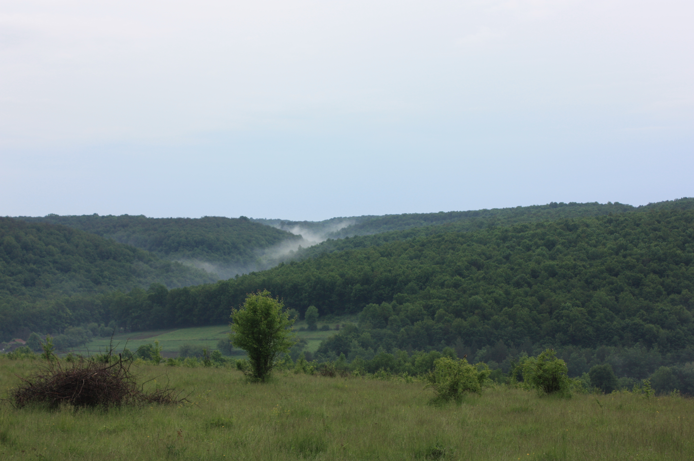
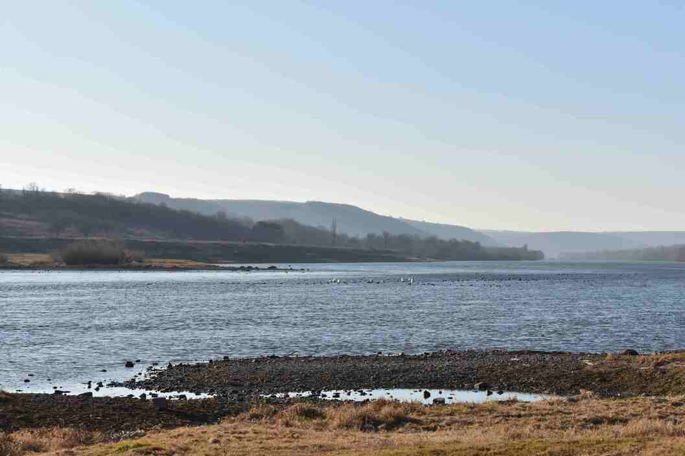
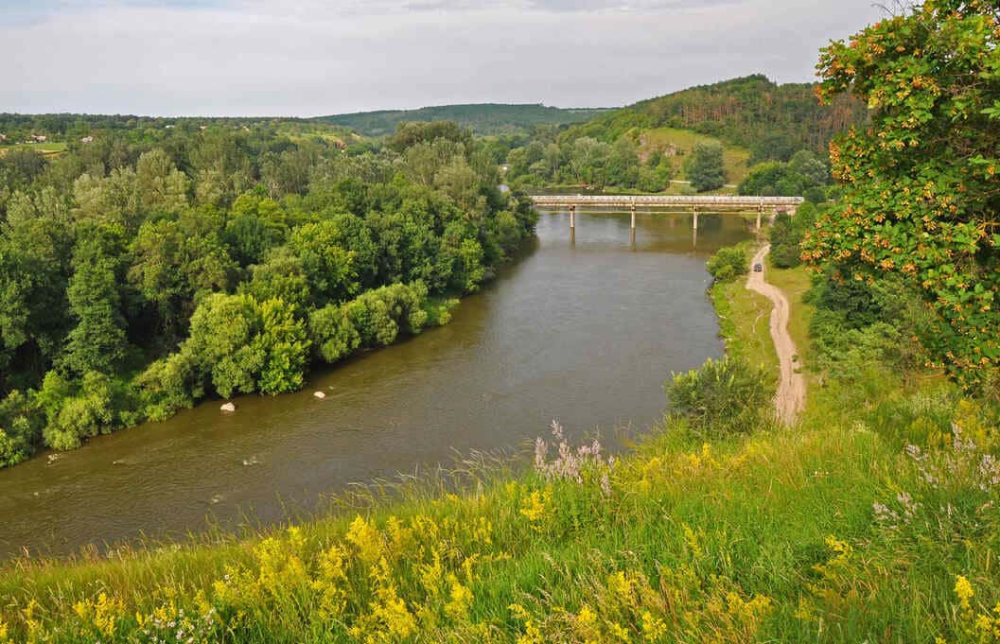
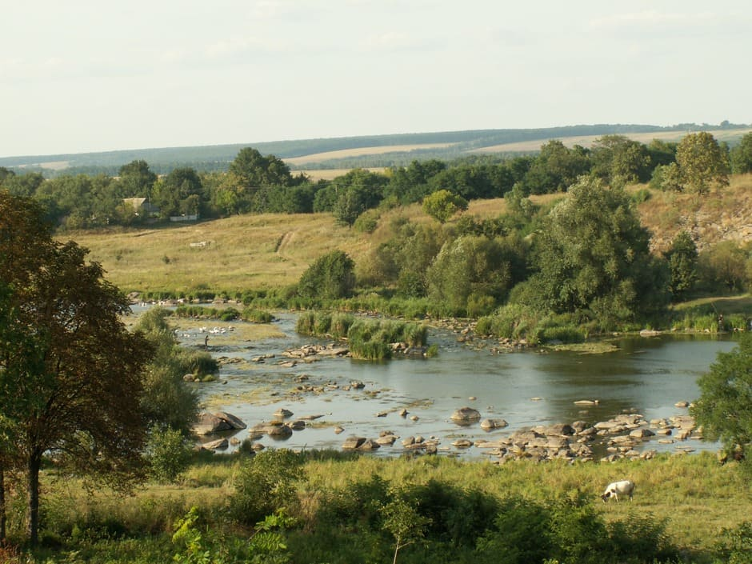
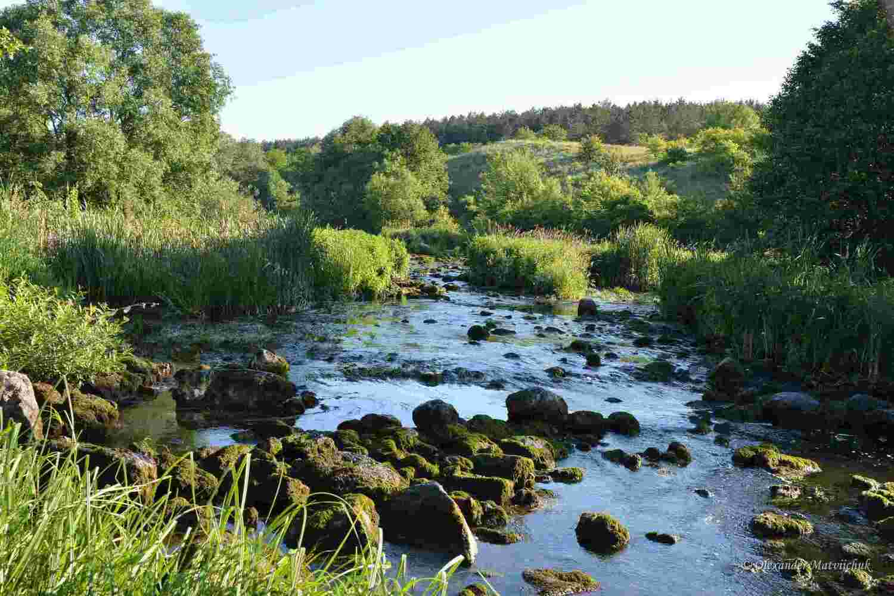

Добірка важливих природоохоронних територій області з короткими описами.
Національний природний парк «Кармелюкове Поділля»

Створений у 2009 році, площа понад 20 тис. га. Це унікальна частина Подільської
височини з лісами, балками, річками та скелями. Тут ростуть підсніжник складчастий,
ковила, сон-трава. Тваринний світ представлений оленем, козулею, кабаном, борсуком,
а також чорним лелекою та совами.
Регіональний ландшафтний парк «Дністер»

Розташований у долині річки Дністер, площа понад 9 тис. га. Відомий каньйонами,
скелями, заплавами. Тут понад 900 видів рослин (ковила, тюльпан дібровний),
орлан-білохвіст, видра, чорний лелека. Популярний серед туристів.
Регіональний ландшафтний парк «Немирівське Побужжя»

Площа близько 7 тис. га. Охоплює скелясті береги Південного Бугу, ліси та луки.
Є понад 600 видів рослин (сон-трава, тюльпан дібровний), тварини – видра, козуля,
журавель сірий, орел-карлик. Важливе місце для птахів.
Регіональний ландшафтний парк «Середнє Побужжя»

Площа близько 10 тис. га. Характеризується мальовничими скелями та порогами
Південного Бугу. Тут понад 800 видів рослин (ковила, шавлія, гвоздика низька),
живуть кабани, козулі, орлан-білохвіст, стерлядь. Важливий центр туризму й охорони природи.
Регіональний ландшафтний парк «Мурафа»

Розташований у долині річки Мурафа, площа близько 6 тис. га. Поєднує ліси, степові
ділянки, луки. Рослинність – понад 500 видів (ковила, півонія втішна). Фауна – лисиця,
борсук, дикий кіт, сова, нетопир. Має туристичне та наукове значення.